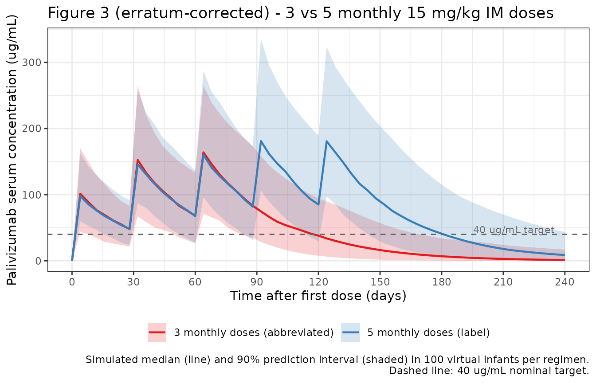
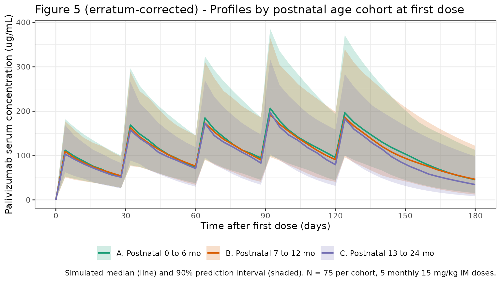

Robbie_2012_palivizumab
Source:vignettes/articles/Robbie_2012_palivizumab.Rmd
Robbie_2012_palivizumab.Rmd
library(nlmixr2lib)
library(dplyr)
#>
#> Attaching package: 'dplyr'
#> The following objects are masked from 'package:stats':
#>
#> filter, lag
#> The following objects are masked from 'package:base':
#>
#> intersect, setdiff, setequal, union
library(tidyr)
library(ggplot2)
library(PKNCA)
#>
#> Attaching package: 'PKNCA'
#> The following object is masked from 'package:stats':
#>
#> filterPalivizumab population PK simulations
Replicates key figures and parameter reference values from Robbie et al. (2012), “Population Pharmacokinetics of Palivizumab, a Humanized Anti-Respiratory Syncytial Virus Monoclonal Antibody, in Adults and Children” (Antimicrob Agents Chemother 56:4927-4936; erratum AAC 56:5431 adds Anderson/Allegaert/Holford 2006 as the maturation-model reference).
- Parameter reference values: reproduce Table 2 (adult, 70 kg, 40-week PAGE) and Table 3 (pediatric reference: 4.5 kg, 12.3-month PAGE).
- Figure 3 (corrected per erratum): simulated concentration-time profiles for 5 monthly 15 mg/kg IM doses vs. an abbreviated 3 monthly dose regimen.
- Figure 5 (corrected per erratum): group median concentration-time profiles stratified by gestational age + postnatal age cohorts.
- PKNCA exposure summary: steady-state Cmax / Cmin / AUC0-tau over the label 5-monthly regimen.
Because the original study data are not publicly available, these figures show simulated prediction intervals from virtual infant populations whose covariate distributions approximate the published trial demographics (Robbie 2012 Table 1). Body weight trajectories are generated using WHO weight-for-age growth standards (combined sex, 0-24 months).
Population
Baseline demographics reproduced from Robbie 2012 Table 1:
| Cohort | N | Key covariates | PK samples |
|---|---|---|---|
| Adults | 116 | age 19.3-58.9 y (mean 32.8); weight 48.9-104.3 kg (mean 72.5); 65.5% female (76/116) | 1,661 |
| Pediatric | 1,684 | PAGE 6.89-34.7 mo (median 12.6); weight 0.92-16.3 kg (median 5.64); gestational age 22-41 wk (median 30; 62% preterm); 36% CLD of prematurity; 932 boys + 752 girls (44.7% female); 54% White, 20% Black, 18% Hispanic, 2% Asian, 6% Other | 4,095 |
PK-analysis dataset totals 1,800 subjects across 22 clinical studies (9 adult: 7 healthy-volunteer + 2 transplant; 13 pediatric); Table 1 reports 1,883 enrolled. Adult cohort was dosed IV or IM across studies; pediatric cohort was dosed IM. Dose range 3-30 mg/kg; label regimen is 5 monthly doses of 15 mg/kg IM.
Source trace
| Element | Source location |
|---|---|
| 2-compartment structural model with first-order IM absorption | Robbie 2012, Methods, “Population pharmacokinetic model” subsection (ADVAN4 TRANS4). |
| Allometric weight scaling (CL/Q exp 0.75; Vc/Vp exp 1.0; 70 kg reference) | Robbie 2012, eq. (3) and Table 2 footnote. |
| PAGE definition PAGE = AGE(months) + GA(weeks)/4.35 | Robbie 2012, eq. (1). |
| Maturation on CL (asymptotic exponential centered at 40-week PAGE) | Robbie 2012, eq. (1a) / eq. (4); Anderson/Allegaert/Holford 2006 parameterization added as reference 1a by the 2012 erratum (AAC 56:5431 / PMC3457364). |
| CL, Vc, Vp, Q, ka, F1 final estimates (adult reference, 70 kg) | Robbie 2012, Table 2. |
| beta, TCL maturation parameters | Robbie 2012, Table 2 (“maturation parameters”). |
| Race effects on CL (Black, Hispanic, Asian, Other) and on Vc (Hispanic) | Robbie 2012, Table 2. |
| Chronic lung disease of prematurity effect on CL (+20%) | Robbie 2012, Table 2 (“theta_CLD” row). |
| ADA titer step-function effect on CL (4 bins: 10, 20, 40, >=80) | Robbie 2012, Table 2 (“theta_titer” rows). |
| IIV: CL CV 48.7%, Vc CV 61.7%, correlation rho = 0.62 | Robbie 2012, Table 2. |
| Residual proportional error, sigma^2 = 0.0639 | Robbie 2012, Table 2. |
| Pediatric reference scaling (4.5 kg, 12.3-month PAGE) | Robbie 2012, Table 3. |
| Figure 3 (corrected per erratum): 3- vs 5-dose profiles | Robbie 2012, Figure 3 (PDF page 7); erratum replaces the original panel. |
| Figure 5 (corrected per erratum): profiles stratified by postnatal age cohort | Robbie 2012, Figure 5 (PDF page 9); erratum updates legend. |
WHO weight-for-age growth curve helper
WHO weight-for-age LMS parameters for combined sex, 0-24 months (WHO Multicentre Growth Reference Study Group, 2006). Formula: weight (kg) = M * (1 + L * S * z)^(1/L).
who_lms <- data.frame(
age_mo = 0:24,
L = c(0.3487, 0.2297, 0.1970, 0.1738, 0.1553, 0.1395, 0.1257,
0.1125, 0.0998, 0.0875, 0.0756, 0.0640, 0.0527, 0.0418,
0.0313, 0.0211, 0.0113, 0.0018, -0.0073, -0.0161, -0.0245,
-0.0326, -0.0404, -0.0479, -0.0551),
M = c(3.3464, 4.4709, 5.5675, 6.3762, 7.0023, 7.5105, 7.9340,
8.2970, 8.6151, 8.9014, 9.1649, 9.4122, 9.6479, 9.8749,
10.0953, 10.3108, 10.5228, 10.7319, 10.9385, 11.1430, 11.3462,
11.5480, 11.7478, 11.9459, 12.1424),
S = c(0.14602, 0.13395, 0.12385, 0.11876, 0.11535, 0.11254, 0.11056,
0.10947, 0.10868, 0.10814, 0.10765, 0.10722, 0.10706, 0.10695,
0.10695, 0.10700, 0.10710, 0.10723, 0.10737, 0.10754, 0.10773,
0.10793, 0.10814, 0.10835, 0.10858)
)
who_weight <- function(pna_mo, z) {
pna_mo <- pmax(0, pmin(pna_mo, 24))
L <- approx(who_lms$age_mo, who_lms$L, xout = pna_mo)$y
M <- approx(who_lms$age_mo, who_lms$M, xout = pna_mo)$y
S <- approx(who_lms$age_mo, who_lms$S, xout = pna_mo)$y
M * (1 + L * S * z)^(1 / L)
}Load model and confirm reference parameter values
mod <- readModelDb("Robbie_2012_palivizumab")Sanity-check reference values against the paper’s Tables 2 and 3: a single typical subject (no between-subject variability, no dose) should yield the published per-subject CL, Vc, Vp, Q at each reference.
mod0 <- rxode2::zeroRe(mod)
#> ℹ parameter labels from comments will be replaced by 'label()'
ref_ev <- function(WT, PAGE) {
data.frame(
ID = 1, TIME = c(0, 1e-6),
AMT = c(1, 0),
EVID = c(1, 0),
CMT = c("depot", "central"),
DV = NA,
WT = WT, PAGE = PAGE,
RACE_BLACK = 0, RACE_HISPANIC = 0, RACE_ASIAN = 0, RACE_OTHER = 0,
CLD_PREM = 0, ADA_TITER = 0
)
}
adult <- as.data.frame(rxode2::rxSolve(mod0, events = ref_ev(70, 12 * 30 + 9)))
#> ℹ omega/sigma items treated as zero: 'etalcl', 'etalvc'
ped <- as.data.frame(rxode2::rxSolve(mod0, events = ref_ev(4.5, 12.3)))
#> ℹ omega/sigma items treated as zero: 'etalcl', 'etalvc'
ref_table <- data.frame(
parameter = c("CL (mL/day)", "Vc (mL)", "Vp (mL)", "Q (mL/day)"),
paper_adult = c(198, 4090, 2230, 879),
model_adult = round(c(adult$cl[1] * 1000, adult$vc[1] * 1000,
adult$vp[1] * 1000, adult$q[1] * 1000), 1),
paper_pediatric = c(11.0, 263, 143, 112),
model_pediatric = round(c(ped$cl[1] * 1000, ped$vc[1] * 1000,
ped$vp[1] * 1000, ped$q[1] * 1000), 1)
)
knitr::kable(ref_table,
caption = "Reference parameter reproduction against Robbie 2012 Tables 2 and 3.")| parameter | paper_adult | model_adult | paper_pediatric | model_pediatric |
|---|---|---|---|---|
| CL (mL/day) | 198 | 195.9 | 11 | 10.9 |
| Vc (mL) | 4090 | 4090.0 | 263 | 262.9 |
| Vp (mL) | 2230 | 2230.0 | 143 | 143.4 |
| Q (mL/day) | 879 | 879.0 | 112 | 112.2 |
Small deviations at the adult reference (~1%) arise because the adult reference in Table 2 is reported without the maturation multiplier; the model output here evaluates the full CL expression at a typical-adult PAGE.
Helper: build a virtual pediatric cohort
make_cohort <- function(n, ga_range, pna0_range, max_day,
cld_prob = 0, ada_titer_fn = function(n) rep(0, n),
obs_days = seq(0, max_day, by = 7),
race_probs = c(White = 0.54, Black = 0.20,
Hispanic = 0.18, Asian = 0.02, Other = 0.06),
n_doses = 5, dose_mg_per_kg = 15,
id_offset = 0L) {
# id_offset lets callers stack multiple cohorts with non-overlapping IDs.
# rxSolve treats ID as the subject key, so two rows with ID=1 and
# different parameters would be merged into a single (wrong) subject.
GA <- runif(n, ga_range[1], ga_range[2])
PNA_0 <- runif(n, pna0_range[1], pna0_range[2])
wt_z <- pmax(-2, pmin(2, rnorm(n, 0, 1)))
WT_0 <- who_weight(PNA_0, wt_z)
CLD_PREM <- as.integer(runif(n) < cld_prob)
ADA_T <- ada_titer_fn(n)
race <- sample(names(race_probs), n, replace = TRUE, prob = race_probs)
pop <- data.frame(
ID = seq_len(n) + id_offset, GA, PNA_0, wt_z, WT_0,
RACE_BLACK = as.integer(race == "Black"),
RACE_HISPANIC = as.integer(race == "Hispanic"),
RACE_ASIAN = as.integer(race == "Asian"),
RACE_OTHER = as.integer(race == "Other"),
CLD_PREM = CLD_PREM, ADA_TITER = ADA_T
)
# Dose records: n_doses at 30-day intervals, 15 mg/kg of current weight
dose_times <- (0:(n_doses - 1)) * 30
d_dose <- pop[rep(seq_len(n), each = length(dose_times)), ] |>
mutate(
TIME = rep(dose_times, times = n),
EVID = 1, CMT = "depot", DV = NA,
PNA = PNA_0 + TIME / 30.44,
PAGE = GA / 4.35 + PNA,
WT = who_weight(pmax(0, PNA), wt_z),
AMT = dose_mg_per_kg * WT
)
# Observation records: weekly sampling
d_obs <- pop[rep(seq_len(n), each = length(obs_days)), ] |>
mutate(
TIME = rep(obs_days, times = n),
EVID = 0, CMT = "central", DV = NA, AMT = 0,
PNA = PNA_0 + TIME / 30.44,
PAGE = GA / 4.35 + PNA,
WT = who_weight(pmax(0, PNA), wt_z)
)
bind_rows(d_dose, d_obs) |>
arrange(ID, TIME, desc(EVID)) |>
select(ID, TIME, AMT, EVID, CMT, DV, WT, PAGE,
RACE_BLACK, RACE_HISPANIC, RACE_ASIAN, RACE_OTHER,
CLD_PREM, ADA_TITER, WT_0, GA, PNA_0)
}Figure 3 (erratum-corrected) - 3 vs 5 monthly doses
Replicates the erratum-corrected Figure 3: simulated concentration-time profiles from the abbreviated 3 monthly 15 mg/kg IM dose regimen compared with the label 5 monthly doses, in a typical pediatric cohort.
set.seed(22802243) # PMID seed
n_f3 <- 300
obs_days_f3 <- seq(0, 240, by = 2)
ev_5 <- make_cohort(n_f3, ga_range = c(26, 41), pna0_range = c(0, 6),
max_day = 240, cld_prob = 0.2,
obs_days = obs_days_f3, n_doses = 5,
id_offset = 0L) |>
mutate(regimen = "5 monthly doses (label)")
ev_3 <- make_cohort(n_f3, ga_range = c(26, 41), pna0_range = c(0, 6),
max_day = 240, cld_prob = 0.2,
obs_days = obs_days_f3, n_doses = 3,
id_offset = n_f3) |>
mutate(regimen = "3 monthly doses (abbreviated)")
sim_f3 <- bind_rows(ev_5, ev_3)
out_f3 <- rxode2::rxSolve(mod, events = sim_f3, keep = "regimen") |>
as.data.frame()
#> ℹ parameter labels from comments will be replaced by 'label()'
d_f3 <- out_f3 |>
group_by(regimen, time) |>
summarise(
Q05 = quantile(Cc, 0.05, na.rm = TRUE),
Q50 = quantile(Cc, 0.50, na.rm = TRUE),
Q95 = quantile(Cc, 0.95, na.rm = TRUE),
.groups = "drop"
)
ggplot(d_f3, aes(x = time, y = Q50, colour = regimen, fill = regimen)) +
geom_ribbon(aes(ymin = Q05, ymax = Q95), alpha = 0.2, colour = NA) +
geom_line(linewidth = 0.8) +
geom_hline(yintercept = 40, linetype = "dashed", colour = "grey40") +
annotate("text", x = 235, y = 42, hjust = 1, vjust = 0,
label = "40 ug/mL target", size = 3, colour = "grey40") +
scale_colour_brewer(palette = "Set1") +
scale_fill_brewer(palette = "Set1") +
scale_y_continuous(limits = c(0, NA)) +
scale_x_continuous(breaks = seq(0, 240, by = 30)) +
labs(
x = "Time after first dose (days)",
y = "Palivizumab serum concentration (ug/mL)",
title = "Figure 3 (erratum-corrected) - 3 vs 5 monthly 15 mg/kg IM doses",
caption = paste0(
"Simulated median (line) and 90% prediction interval (shaded) in ",
n_f3, " virtual infants per regimen.\n",
"Dashed line: 40 ug/mL nominal target."
),
colour = NULL, fill = NULL
) +
theme_bw() +
theme(legend.position = "bottom")
Figure 5 (erratum-corrected) - profiles stratified by postnatal age
The erratum-corrected legend specifies “Group median concentration-time profiles of palivizumab at 15 mg/kg stratified by gestational age and postnatal age cohorts, 0 to 6 months (A), 7 to 12 months (B), and 13 to 24 months (C).” Replicate with three cohorts differing in postnatal age at first dose.
set.seed(4927) # first journal page
cohorts <- list(
list(label = "A. Postnatal 0 to 6 mo", pna = c(0, 6)),
list(label = "B. Postnatal 7 to 12 mo", pna = c(7, 12)),
list(label = "C. Postnatal 13 to 24 mo", pna = c(13, 24))
)
obs_days_f5 <- seq(0, 180, by = 2)
n_per_cohort <- 200
sim_f5 <- bind_rows(lapply(seq_along(cohorts), function(i) {
co <- cohorts[[i]]
# Each cohort's IDs are offset by (i-1)*n_per_cohort so bind_rows does
# not produce multiple rows with the same ID (which would collapse
# distinct subjects into one inside rxSolve).
make_cohort(n_per_cohort, ga_range = c(26, 41), pna0_range = co$pna,
max_day = 180, cld_prob = 0.2,
obs_days = obs_days_f5, n_doses = 5,
id_offset = (i - 1L) * n_per_cohort) |>
mutate(cohort = co$label)
}))
# `keep = "cohort"` carries the source-table `cohort` column through
# rxSolve's output without needing a post-hoc left_join — avoids the
# duplicate-ID merge trap altogether.
out_f5 <- rxode2::rxSolve(mod, events = sim_f5, keep = "cohort") |>
as.data.frame()
#> ℹ parameter labels from comments will be replaced by 'label()'
d_f5 <- out_f5 |>
group_by(cohort, time) |>
summarise(
Q05 = quantile(Cc, 0.05, na.rm = TRUE),
Q50 = quantile(Cc, 0.50, na.rm = TRUE),
Q95 = quantile(Cc, 0.95, na.rm = TRUE),
.groups = "drop"
)
ggplot(d_f5, aes(x = time, y = Q50, colour = cohort, fill = cohort)) +
geom_ribbon(aes(ymin = Q05, ymax = Q95), alpha = 0.2, colour = NA) +
geom_line(linewidth = 0.8) +
scale_colour_brewer(palette = "Dark2") +
scale_fill_brewer(palette = "Dark2") +
scale_y_continuous(limits = c(0, NA)) +
scale_x_continuous(breaks = seq(0, 180, by = 30)) +
labs(
x = "Time after first dose (days)",
y = "Palivizumab serum concentration (ug/mL)",
title = "Figure 5 (erratum-corrected) - Profiles by postnatal age cohort at first dose",
caption = "Simulated median (line) and 90% prediction interval (shaded). N = 200 per cohort, 5 monthly 15 mg/kg IM doses.",
colour = NULL, fill = NULL
) +
theme_bw() +
theme(legend.position = "bottom")
PKNCA exposure summary for the 5-monthly regimen
Compute steady-state Cmax, Cmin, and AUC0-tau over the last dosing
interval for the Figure 3 5-dose cohort, using PKNCA (not inline
trapezoidal integration) as the convention for validation vignettes. The
grouping variable keeps adult vs pediatric separation possible for
future multi-group comparisons; here we carry a single
treatment level.
tau <- 30
last_dose_time <- 4 * tau
conc_df <- out_f3 |>
as.data.frame() |>
filter(regimen == "5 monthly doses (label)", !is.na(Cc)) |>
mutate(treatment = "pediatric_5dose_15mpk") |>
select(id, time, Cc, treatment)
dose_df <- ev_5 |>
filter(EVID == 1) |>
mutate(treatment = "pediatric_5dose_15mpk") |>
select(id = ID, time = TIME, amt = AMT, treatment)
conc_obj <- PKNCA::PKNCAconc(conc_df, Cc ~ time | treatment + id)
dose_obj <- PKNCA::PKNCAdose(dose_df, amt ~ time | treatment + id)
intervals <- data.frame(
start = last_dose_time,
end = last_dose_time + tau,
cmax = TRUE,
tmax = TRUE,
cmin = TRUE,
auclast = TRUE,
cav = TRUE
)
res <- PKNCA::pk.nca(PKNCA::PKNCAdata(conc_obj, dose_obj, intervals = intervals))
nca_df <- as.data.frame(res$result)
nca_summary <- nca_df |>
group_by(PPTESTCD) |>
summarise(
median = round(median(PPORRES, na.rm = TRUE), 2),
q05 = round(quantile(PPORRES, 0.05, na.rm = TRUE), 2),
q95 = round(quantile(PPORRES, 0.95, na.rm = TRUE), 2),
.groups = "drop"
)
knitr::kable(nca_summary,
caption = "Steady-state NCA (final dosing interval) of the 5-monthly 15 mg/kg IM regimen in virtual pediatric infants.")| PPTESTCD | median | q05 | q95 |
|---|---|---|---|
| auclast | 4269.21 | 1985.56 | 8014.04 |
| cav | 142.31 | 66.19 | 267.13 |
| cmax | 201.67 | 100.26 | 353.21 |
| cmin | 93.57 | 32.29 | 191.07 |
| tmax | 2.00 | 2.00 | 2.00 |
The paper does not tabulate individual pediatric NCA results, so this table serves as a forward-prediction of steady-state exposure under the label regimen; reviewers can compare qualitatively against the 40 ug/mL target cited in the paper’s discussion.
Assumptions and deviations
-
Erratum eq. 10 numerical correction (6,900 ->
16,900). The 2012 erratum corrects “6,900” to “16,900” in
equation 10. Equation 10 is the NONMEM
$PRIORmatrix from the adult fit used to inform the pediatric fit (THETA prior means and the diagonal of the OMEGA prior covariance); 16,900 is the prior variance for adult Vp (consistent with the adult fit’s reported %RSE of 5.39% on Vp = 2,410 mL: SE = 130 mL, SE^2 = 16,900). The model file uses the post-fit final parameter estimates from Table 2, not the priors from equation 10, so the erratum’s numerical correction does not propagate to anyini()value. The other erratum corrections (renaming equation 4 to “1a”, adding Anderson/Allegaert/Holford 2006 as reference 1a, the Figure 3 replacement, the Figure 5 legend rewording) are all reflected in the model file’sreferencefield and the source trace above. -
Maturation parameterization. The paper’s eq. 4 / 1a
reads
TVCL = theta_CL * (1 - beta * exp(...))but the reported beta = 0.411 and TCL = 62.3 months only reproduce the pediatric Table 3 reference (CL = 11.0 mL/day at 4.5 kg, 12.3-mo PAGE) and the abstract’s 10.2 to 11.9 mL/day PAGE 7-18 month range when the equation is taken as(1 - (1-beta) * exp(...)), i.e., beta = fraction of adult CL at term = 0.411. This is the Anderson / Allegaert / Holford (2006) parameterization added by the 2012 erratum as reference 1a. The model file uses this form and documents the choice in the ini() block and model() comments. -
ADA titer as a step function. Robbie 2012 modelled
ADA titer as four separate multiplicative bins (10, 20, 40, >=80)
rather than as a continuous trend. The implementation derives the bin
indicators inside model() from the continuous canonical
ADA_TITERcolumn so that users supply a single column. Values 0 (ADA-negative) map to the reference theta = 1. - Hispanic race on Vc. A Hispanic effect on Vc (1.06, CI included unity) is reported alongside the CL race effects; it is included for structural fidelity.
-
Residual variance. The paper reports sigma^2_prop =
0.0639 and a proportional-error CV of 23.4%. The model uses
propSd = sqrt(0.0639) = 0.2528(25.3%); the 23.4% figure appears to be a derived summary rather than the fundamental estimate. - Race and weight for the virtual cohort. Race distribution matches Robbie 2012 Table 1 pediatric proportions (54/20/18/2/6 White/Black/ Hispanic/Asian/Other); weight uses WHO combined-sex LMS with each infant’s z-score held constant.
-
Population metadata corrected at revisit. The
original extraction ran from a PMC abstract stub that did not contain
the Methods text. The pediatric
n_pediatriccount of 1,767 (derived as Table 1 enrolled total 1,883 minus 116 adults) was replaced with the paper’s PK-analysis dataset count of 1,684 (“932 boys and 752 girls”);n_subjectswas realigned from 1,883 enrolled to 1,800 in the PK dataset; andsex_female_pctdenominator was corrected from 1,660 to 1,684 (giving 44.7% rather than 45.3% female). - Original observed data not available. All figures show simulated prediction intervals only.
Reference
- Robbie GJ, Zhao L, Mondick J, Losonsky G, Roskos LK. Population Pharmacokinetics of Palivizumab, a Humanized Anti-Respiratory Syncytial Virus Monoclonal Antibody, in Adults and Children. Antimicrob Agents Chemother. 2012;56(9):4927-4936. doi:10.1128/AAC.06446-11. Erratum in: Antimicrob Agents Chemother. 2012;56(10):5431 (PMC3457364) adding Anderson BJ, Allegaert K, Holford NH. 2006. Eur J Pediatr. 165:819-829 as reference 1a for the maturation model.